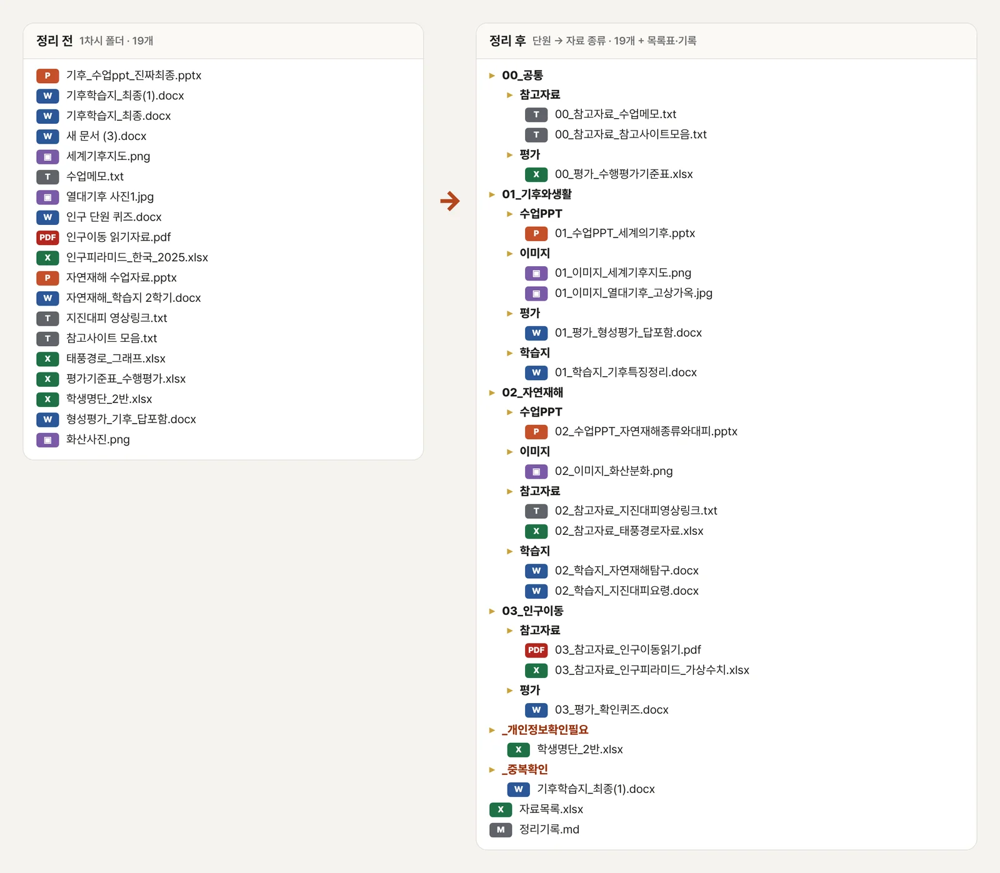
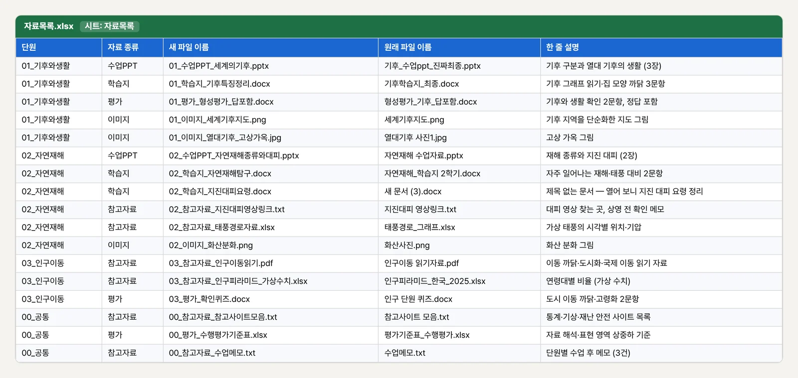

1차시 · Ⅰ. 코워크
수업 자료 폴더 정리하기
한 학기 동안 쌓인 수업 자료를 단원·자료 종류별 폴더로 정리하고, 자료 목록표와 정리 기록을 만듭니다.
과업
- 목표
- 이름이 제각각인 수업 자료 19개를 단원 → 자료 종류 폴더로 정리하고 목록표를 만든다 (예시: 중학교 사회 — 기후·자연재해·인구 자료)
- 준비물
- 예시 파일 l01-class-files.zip 을
클로드연수안에 푼1차시폴더 (모두 가상 자료) - 결과물
- ① 정리된 폴더 ②
자료목록.xlsx③정리기록.md④ 다음에 다시 쓸정리규칙.md - 주의
1차시폴더만 연결 · 어떤 파일도 지우지 않기 · 학생 명단 파일은 열지 않게 하기
폴더 정리는 코워크가 내 파일을 직접 다루는 가장 단순한 일이라 첫 차시로 골랐습니다. 채팅이라면 파일 목록을 붙여 넣고 정리 방법을 받아 내가 옮겨야 하지만, 코워크는 파일을 열어 보고 직접 옮깁니다. 그래서 핵심은 둘입니다. 실행 전에 계획을 받는 것, 그리고 정리 기준을 문장으로 분명히 쓰는 것입니다.
먼저 볼 영상

통합 전 화면으로 찍은 영상이라 새 화면 에서는 메뉴 위치가 조금 다릅니다.
1 준비
- 연수 전 점검에서 받은 l01-class-files.zip 을
클로드연수안에 풉니다.1차시폴더 안에 파일 19개가 보이면 됩니다. - 실제 내 자료로 해 보고 싶다면 원본이 아닌 복사본을
1차시폴더에 넣습니다.
2 따라 하기
번호 순서대로 진행합니다. 프롬프트가 필요한 단계에는 바로 아래에 복사 단추가 있습니다.
- 클로드 데스크톱 앱에서 새 대화를 엽니다.
새 화면 메시지 상자에 바로 요청합니다. 예전 화면 메시지 상자에서 Cowork 를 먼저 고릅니다. - 메시지 상자에서 내 컴퓨터 폴더를 연결하는 단추를 눌러
클로드연수/1차시폴더를 고릅니다. 단추 이름은 화면 문구를 따릅니다.캡처 넣을 곳 · L01-1
폴더를 연결하는 화면 (따라 하기 2번).- 빨간 상자: 메시지 상자의 폴더 연결 단추
- 폴더 고르기 창에서
클로드연수/1차시를 고른 모습 - 연결된 뒤 메시지 상자에 폴더 이름이 보이는 모습
- 권한 설정을 Manual(수동)로 바꿉니다. 첫 실습은 클로드가 파일을 옮기기 전에 묻게 둡니다.
- 계획만 먼저 받습니다. 아래 프롬프트를 복사해 붙여넣고 보내면, 클로드가 파일을 열어 보고 정리 계획을 표로 보여 줍니다.
연결한 폴더(1차시)에 있는 파일을 모두 열어 보고, 정리 계획만 먼저 보여 주세요. 아직 파일을 옮기거나 이름을 바꾸지 마세요. 정리 기준 - 1단계 폴더: 단원별. 단원 이름은 파일 내용을 보고 정하고, 앞에 01_, 02_ 번호를 붙이기 - 여러 단원에 두루 쓰는 자료는 00_공통 - 2단계 폴더: 자료 종류 (수업PPT · 학습지 · 평가 · 참고자료 · 이미지) - 새 파일 이름: [단원번호]_[자료종류]_[내용].확장자 - 파일 이름만 보지 말고 내용을 열어 확인해서 분류하기 - 내용이 같은 파일은 지우지 말고 _중복확인 폴더로 - 파일 이름에 명단·연락처·성적이 들어간 파일은 열지 말고 _개인정보확인필요 폴더로 - 어떤 파일도 지우지 않기 계획은 표로 보여 주세요: 원래 이름 | 옮길 폴더 | 새 이름 | 그렇게 판단한 근거
«아직 옮기지 마세요»가 이 차시의 핵심 문장입니다. 계획 표의 판단 근거 열을 보면 클로드가 내용을 열어 보고 분류했는지, 이름만 보고 짐작했는지 드러납니다. 지우지 않기와 개인정보 파일은 열지 않기를 기준에 함께 적어 두면, 권한 설정과 별개로 한 번 더 막아 줍니다.
캡처 넣을 곳 · L01-2
정리 계획 표 (따라 하기 4번).- 프롬프트 1에 대한 답 — 정리 계획 표가 보이게
- 계획을 읽고 고칠 점은 말로 고칩니다. 예: «인구피라미드 파일은 참고자료 말고 평가 자료로 옮겨 주세요»
- 실행합니다. 아래 프롬프트를 보내고, 클로드가 허락을 구하면 내용을 보고 승인합니다.
계획대로 정리해 주세요. 다 끝나면 아래 두 파일을 1차시 폴더에 만들어 주세요. 1. 자료목록.xlsx - 열: 단원 | 자료 종류 | 새 파일 이름 | 원래 파일 이름 | 한 줄 설명 - 첫 줄은 고정하고 필터를 켜기 - 한 줄 설명은 파일 내용을 보고 쓰기 2. 정리기록.md - 원래 이름과 옮긴 곳을 표로 - 맨 아래에 정리 전·후 파일 개수
캡처 넣을 곳 · L01-3
허락을 구하는 화면 (따라 하기 6번).- 빨간 상자: 승인 단추
- 파일 탐색기(맥은 Finder)에서
1차시폴더를 열어 결과를 확인하고,자료목록.xlsx를 엽니다. - 마지막으로 오늘의 정리 기준을 파일로 남깁니다.
오늘 쓴 정리 기준을 «정리규칙.md» 파일로 1차시 폴더에 저장해 주세요. 다음에 다른 폴더를 정리할 때 이 파일을 보여 주면 같은 기준으로 정리할 수 있게, 규칙만 짧게 번호를 붙여 적어 주세요.
정리규칙.md 는 다음 학기에 다시 꺼내 쓸 수 있는 «작업 설명서»입니다. 이런 설명서를 클로드가 알아서 꺼내 쓰게 만든 것이 12차시에서 만드는 스킬입니다.
3 결과 예시

새 문서 (3).docx 는 내용(지진 대피 요령)을 보고 02_자연재해/학습지로 갔고, 내용이 같은 기후학습지_최종(1).docx 는 지우지 않고 _중복확인으로, 학생명단_2반.xlsx 는 열지 않고 _개인정보확인필요로 옮겼습니다.
이 결과 예시에 대해
같은 예시 파일 묶음에 프롬프트 1·2의 기준을 그대로 적용해 연수자료를 만들 때 정리한 모습입니다. 코워크의 실제 결과는 폴더 이름·분류·설명이 매번 조금씩 다릅니다.
4 검증 포인트
① 파일 개수 — 정리기록.md 맨 아래의 정리 전·후 개수가 같은지, 파일 탐색기에서 실제로 세어 맞는지 봅니다.
② 지운 파일 — 하나도 없어야 합니다. 중복 파일은 _중복확인에 남아 있어야 합니다.
③ 내용 기준 분류 —
④ 개인정보 파일 — 학생 명단을 열지 않고 옮겼는지 대화 기록에서 확인합니다. 열었다면 다음부터 그런 파일은 아예 실습 폴더에 넣지 않습니다.
⑤ 한 줄 설명 — 목록표에서 두세 개를 골라 파일을 직접 열고, 설명이 실제 내용과 맞는지 봅니다. 클로드는 파일을 제대로 읽지 못했을 때도 그럴듯한 설명을 지어낼 수 있습니다.
⑥ 원래 이름 — 목록표와 기록에 원래 이름이 남아 있어야 나중에 «그 파일 어디 갔지?»를 찾을 수 있습니다.
② 지운 파일 — 하나도 없어야 합니다. 중복 파일은 _중복확인에 남아 있어야 합니다.
③ 내용 기준 분류 —
새 문서 (3).docx 처럼 이름으로는 알 수 없는 파일이 맞는 곳에 갔는지 봅니다. 엉뚱하면 이름만 보고 짐작한 것입니다.④ 개인정보 파일 — 학생 명단을 열지 않고 옮겼는지 대화 기록에서 확인합니다. 열었다면 다음부터 그런 파일은 아예 실습 폴더에 넣지 않습니다.
⑤ 한 줄 설명 — 목록표에서 두세 개를 골라 파일을 직접 열고, 설명이 실제 내용과 맞는지 봅니다. 클로드는 파일을 제대로 읽지 못했을 때도 그럴듯한 설명을 지어낼 수 있습니다.
⑥ 원래 이름 — 목록표와 기록에 원래 이름이 남아 있어야 나중에 «그 파일 어디 갔지?»를 찾을 수 있습니다.
5 다른 교과에 적용하기
따라 하기 4단계 프롬프트 대신 아래 교과 프롬프트를 씁니다. 6단계(실행)와 8단계(정리 기준 남기기) 프롬프트는 그대로 씁니다. 자료목록에 열을 더하는 사례(사회·음악·진로)는 6단계 프롬프트의 «열:» 줄 끝에도 같은 열을 더합니다. 교과를 눌러 펼친 뒤 복사합니다.
국어작품별 자료갈래 → 작품 폴더, 그 안에 해설·활동지·평가
연결한 폴더에 있는 파일을 모두 열어 보고, 정리 계획만 먼저 보여 주세요. 아직 파일을 옮기거나 이름을 바꾸지 마세요. 정리 기준 - 1단계 폴더: 갈래별 (01_시, 02_소설, 03_수필, 04_극). 갈래는 파일 내용을 보고 정하기 - 2단계 폴더: 작품 제목 - 작품 폴더 안 파일 이름: [작품 제목]_[해설·활동지·평가 중 하나]_[내용].확장자 - 특정 작품이 아닌 자료(문법·쓰기·말하기 등)는 00_공통 - 파일 이름만 보지 말고 내용을 열어 확인해서 분류하기 - 내용이 같은 파일은 지우지 말고 _중복확인 폴더로 - 파일 이름에 명단·연락처·성적이 들어간 파일은 열지 말고 _개인정보확인필요 폴더로 - 어떤 파일도 지우지 않기 계획은 표로 보여 주세요: 원래 이름 | 옮길 폴더 | 새 이름 | 그렇게 판단한 근거
수학단원과 난이도단원 폴더 + 파일 이름 끝에 난이도
연결한 폴더에 있는 파일을 모두 열어 보고, 정리 계획만 먼저 보여 주세요. 아직 파일을 옮기거나 이름을 바꾸지 마세요. 정리 기준 - 1단계 폴더: 단원별. 단원 이름은 파일 내용을 보고 정하고, 앞에 01_, 02_ 번호를 붙이기 - 2단계 폴더: 자료 종류 (개념 · 문제 · 평가) - 문제 파일은 이름 끝에 난이도를 붙이기: _기본, _발전, _심화 (문제 수준을 보고 정하고, 판단이 어려우면 _난이도확인) - 정답·풀이 파일은 짝이 되는 문제 파일과 같은 이름 뒤에 _풀이 - 파일 이름만 보지 말고 내용을 열어 확인해서 분류하기 - 내용이 같은 파일은 지우지 말고 _중복확인 폴더로 - 파일 이름에 명단·연락처·성적이 들어간 파일은 열지 말고 _개인정보확인필요 폴더로 - 어떤 파일도 지우지 않기 계획은 표로 보여 주세요: 원래 이름 | 옮길 폴더 | 새 이름 | 그렇게 판단한 근거
영어듣기 파일Lesson 폴더에 mp3와 대본을 같은 이름으로 짝짓기
연결한 폴더에 있는 파일을 모두 열어 보고, 정리 계획만 먼저 보여 주세요. 아직 파일을 옮기거나 이름을 바꾸지 마세요. 정리 기준 - 1단계 폴더: Lesson별 (Lesson01, Lesson02 …) - mp3와 대본(txt·docx)은 같은 이름으로 짝지어 같은 폴더에: L01_듣기_01.mp3 / L01_듣기_01_대본.txt - 짝이 없는 mp3나 대본은 _짝확인 폴더로 - mp3 내용은 들을 수 없으면 파일 이름·대본·같은 폴더 자료로 Lesson을 판단하고, 그 근거를 적기 - 파일 이름만 보지 말고 내용을 열어 확인해서 분류하기 - 내용이 같은 파일은 지우지 말고 _중복확인 폴더로 - 파일 이름에 명단·연락처·성적이 들어간 파일은 열지 말고 _개인정보확인필요 폴더로 - 어떤 파일도 지우지 않기 계획은 표로 보여 주세요: 원래 이름 | 옮길 폴더 | 새 이름 | 그렇게 판단한 근거
과학실험 자료실험별 폴더에 사진·보고서 양식·안전 수칙
연결한 폴더에 있는 파일을 모두 열어 보고, 정리 계획만 먼저 보여 주세요. 아직 파일을 옮기거나 이름을 바꾸지 마세요. 정리 기준 - 1단계 폴더: 실험별 (01_실험 이름, 02_실험 이름 …) - 실험 폴더 안: 사진 · 보고서양식 · 안전수칙 · 결과자료 - 사진은 찍은 날짜 순서로 [실험 이름]_사진_01, _02 … 로 이름 붙이기 - 사진에 사람 얼굴이 보이면 옮기지 말고 _개인정보확인필요 폴더로 - 파일 이름만 보지 말고 내용을 열어 확인해서 분류하기 - 내용이 같은 파일은 지우지 말고 _중복확인 폴더로 - 파일 이름에 명단·연락처·성적이 들어간 파일은 열지 말고 _개인정보확인필요 폴더로 - 어떤 파일도 지우지 않기 계획은 표로 보여 주세요: 원래 이름 | 옮길 폴더 | 새 이름 | 그렇게 판단한 근거
사회지도와 그래프자료목록에 «출처» 열, 출처 없는 자료 표시
연결한 폴더에 있는 파일을 모두 열어 보고, 정리 계획만 먼저 보여 주세요. 아직 파일을 옮기거나 이름을 바꾸지 마세요. 정리 기준 - 1단계 폴더: 단원별, 2단계 폴더: 자료 종류 (지도 · 그래프통계 · 읽기자료 · 활동지 · 평가) - 통계 자료는 이름 끝에 기준 연도: [단원번호]_그래프통계_[내용]_[연도] - 파일 안이나 이름에서 출처(기관·연도)를 찾아 계획 표에 함께 적고, 없으면 «출처 확인 필요» - 파일 이름만 보지 말고 내용을 열어 확인해서 분류하기 - 내용이 같은 파일은 지우지 말고 _중복확인 폴더로 - 파일 이름에 명단·연락처·성적이 들어간 파일은 열지 말고 _개인정보확인필요 폴더로 - 어떤 파일도 지우지 않기 정리한 뒤 만들 자료목록.xlsx 에는 «출처» 열을 더할 예정이니, 계획 표에도 «출처» 열을 넣어 주세요. 계획은 표로 보여 주세요: 원래 이름 | 옮길 폴더 | 새 이름 | 그렇게 판단한 근거 | 출처
역사시대순 정리시대 순서 폴더, 사료 이미지는 «사료»로
연결한 폴더에 있는 파일을 모두 열어 보고, 정리 계획만 먼저 보여 주세요. 아직 파일을 옮기거나 이름을 바꾸지 마세요. 정리 기준 - 1단계 폴더: 시대 순서 (01_선사, 02_고조선과여러나라, 03_삼국과남북국, 04_고려, 05_조선, 06_근현대) - 2단계 폴더: 수업PPT · 사료 · 활동지 · 평가 - 사료 이미지 이름: [시대번호]_사료_[사료 이름].확장자 - 시대를 정하기 어려운 자료는 _시대확인 폴더로 - 파일 이름만 보지 말고 내용을 열어 확인해서 분류하기 - 내용이 같은 파일은 지우지 말고 _중복확인 폴더로 - 파일 이름에 명단·연락처·성적이 들어간 파일은 열지 말고 _개인정보확인필요 폴더로 - 어떤 파일도 지우지 않기 계획은 표로 보여 주세요: 원래 이름 | 옮길 폴더 | 새 이름 | 그렇게 판단한 근거
도덕토론 수업주제 폴더 안 읽기 자료를 «찬성_», «반대_»로
연결한 폴더에 있는 파일을 모두 열어 보고, 정리 계획만 먼저 보여 주세요. 아직 파일을 옮기거나 이름을 바꾸지 마세요. 정리 기준 - 1단계 폴더: 토론 주제별 (01_주제, 02_주제 …) - 주제 폴더 안 읽기 자료는 입장에 따라 찬성_[내용], 반대_[내용], 배경_[내용] 으로 이름 붙이기 - 토론 활동지와 평가 기준은 주제 폴더 안 «활동» 폴더로 - 입장을 판단한 근거로 자료의 결론 문장을 계획 표에 옮겨 적기 - 파일 이름만 보지 말고 내용을 열어 확인해서 분류하기 - 내용이 같은 파일은 지우지 말고 _중복확인 폴더로 - 파일 이름에 명단·연락처·성적이 들어간 파일은 열지 말고 _개인정보확인필요 폴더로 - 어떤 파일도 지우지 않기 계획은 표로 보여 주세요: 원래 이름 | 옮길 폴더 | 새 이름 | 그렇게 판단한 근거
기술·가정실습 자료실습별 폴더 + 실습마다 재료 목록표
연결한 폴더에 있는 파일을 모두 열어 보고, 정리 계획만 먼저 보여 주세요. 아직 파일을 옮기거나 이름을 바꾸지 마세요. 정리 기준 - 1단계 폴더: 실습별 (01_실습 이름, 02_실습 이름 …) - 실습 폴더 안: 안내자료 · 재료 · 사진 · 평가 - 실습마다 재료목록.xlsx 를 만들 계획도 세우기: 재료 | 수량 | 예상 비용 | 나온 파일 (파일에 나온 것만 적고, 없으면 빈칸) - 파일 이름만 보지 말고 내용을 열어 확인해서 분류하기 - 내용이 같은 파일은 지우지 말고 _중복확인 폴더로 - 파일 이름에 명단·연락처·성적이 들어간 파일은 열지 말고 _개인정보확인필요 폴더로 - 어떤 파일도 지우지 않기 계획은 표로 보여 주세요: 원래 이름 | 옮길 폴더 | 새 이름 | 그렇게 판단한 근거
정보수업 예제 코드차시별 폴더에 «_예제», «_정답»으로 나누기
연결한 폴더에 있는 파일을 모두 열어 보고, 정리 계획만 먼저 보여 주세요. 아직 파일을 옮기거나 이름을 바꾸지 마세요. 정리 기준 - 1단계 폴더: 차시별 (01차시, 02차시 …). 순서는 코드의 주제와 난이도로 추정하고 근거 적기 - 예제와 정답 파일을 나누어 이름 붙이기: [차시]_예제_[내용].py / [차시]_정답_[내용].py - 문법 오류 때문에 실행되지 않을 것 같은 파일은 계획 표에 «실행 확인 필요» 표시 - 파일 이름만 보지 말고 내용을 열어 확인해서 분류하기 - 내용이 같은 파일은 지우지 말고 _중복확인 폴더로 - 파일 이름에 명단·연락처·성적이 들어간 파일은 열지 말고 _개인정보확인필요 폴더로 - 어떤 파일도 지우지 않기 계획은 표로 보여 주세요: 원래 이름 | 옮길 폴더 | 새 이름 | 그렇게 판단한 근거
음악악보와 음원자료목록에 «이용 조건» 열, 출처 없는 음원은 따로
연결한 폴더에 있는 파일을 모두 열어 보고, 정리 계획만 먼저 보여 주세요. 아직 파일을 옮기거나 이름을 바꾸지 마세요. 정리 기준 - 1단계 폴더: 단원(또는 곡)별, 2단계 폴더: 악보 · 음원 · 활동지 · 평가 - 파일 안이나 이름에 출처·저작권 표시가 있으면 계획 표에 함께 적기 - 출처가 없는 음원은 _출처확인 폴더로 - 음원 내용을 들을 수 없으면 파일 이름과 함께 있는 자료로 판단하고 근거 적기 - 파일 이름만 보지 말고 내용을 열어 확인해서 분류하기 - 내용이 같은 파일은 지우지 말고 _중복확인 폴더로 - 파일 이름에 명단·연락처·성적이 들어간 파일은 열지 말고 _개인정보확인필요 폴더로 - 어떤 파일도 지우지 않기 정리한 뒤 만들 자료목록.xlsx 에는 «이용 조건» 열을 더할 예정이니, 계획 표에도 «이용 조건» 열을 넣어 주세요. 계획은 표로 보여 주세요: 원래 이름 | 옮길 폴더 | 새 이름 | 그렇게 판단한 근거 | 이용 조건
미술작품 사진주제별 폴더, 얼굴·학생 이름은 따로
연결한 폴더에 있는 파일을 모두 열어 보고, 정리 계획만 먼저 보여 주세요. 아직 파일을 옮기거나 이름을 바꾸지 마세요. 정리 기준 - 1단계 폴더: 주제별 (01_주제, 02_주제 …) - 2단계 폴더: 참고작품 · 학생작품 · 활동지 · 평가 - 사람 얼굴이 나온 사진, 파일 이름에 학생 이름이 들어간 파일은 옮기지 말고 _개인정보확인필요 폴더로 - 파일 이름만 보지 말고 내용을 열어 확인해서 분류하기 - 내용이 같은 파일은 지우지 말고 _중복확인 폴더로 - 파일 이름에 명단·연락처·성적이 들어간 파일은 열지 말고 _개인정보확인필요 폴더로 - 어떤 파일도 지우지 않기 계획은 표로 보여 주세요: 원래 이름 | 옮길 폴더 | 새 이름 | 그렇게 판단한 근거
체육종목별 평가종목별 폴더 + 평가 기준표를 한 엑셀로
연결한 폴더에 있는 파일을 모두 열어 보고, 정리 계획만 먼저 보여 주세요. 아직 파일을 옮기거나 이름을 바꾸지 마세요. 정리 기준 - 1단계 폴더: 종목별 (01_종목 이름, 02_종목 이름 …) - 2단계 폴더: 수업자료 · 영상링크 · 평가 - 흩어진 평가 기준표는 평가기준_모음.xlsx 한 파일에 종목마다 한 시트로 모을 계획도 세우기 (원본은 그대로 두기) - 학생 기록(점수·측정값)이 든 파일은 열지 말고 _개인정보확인필요 폴더로 - 파일 이름만 보지 말고 내용을 열어 확인해서 분류하기 - 내용이 같은 파일은 지우지 말고 _중복확인 폴더로 - 파일 이름에 명단·연락처·성적이 들어간 파일은 열지 말고 _개인정보확인필요 폴더로 - 어떤 파일도 지우지 않기 계획은 표로 보여 주세요: 원래 이름 | 옮길 폴더 | 새 이름 | 그렇게 판단한 근거
진로직업 탐색 자료직업군별 폴더, 자료목록에 «대상 학년» 열
연결한 폴더에 있는 파일을 모두 열어 보고, 정리 계획만 먼저 보여 주세요. 아직 파일을 옮기거나 이름을 바꾸지 마세요. 정리 기준 - 1단계 폴더: 직업군별. 직업군 이름은 자료 내용을 보고 정하기 - 2단계 폴더: 읽기자료 · 영상링크 · 활동지 - 자료마다 내용과 난이도를 보고 알맞은 학년(1·2·3학년)을 계획 표에 함께 적고 근거 쓰기 - 파일 이름만 보지 말고 내용을 열어 확인해서 분류하기 - 내용이 같은 파일은 지우지 말고 _중복확인 폴더로 - 파일 이름에 명단·연락처·성적이 들어간 파일은 열지 말고 _개인정보확인필요 폴더로 - 어떤 파일도 지우지 않기 정리한 뒤 만들 자료목록.xlsx 에는 «대상 학년» 열을 더할 예정이니, 계획 표에도 «대상 학년» 열을 넣어 주세요. 계획은 표로 보여 주세요: 원래 이름 | 옮길 폴더 | 새 이름 | 그렇게 판단한 근거 | 대상 학년
담임가정통신문연·월 폴더, 이름은 «날짜_제목»
연결한 폴더에 있는 파일을 모두 열어 보고, 정리 계획만 먼저 보여 주세요. 아직 파일을 옮기거나 이름을 바꾸지 마세요. 정리 기준 - 1단계 폴더: 연·월 (2026-03, 2026-04 …). 문서 안의 날짜를 기준으로 하고, 없으면 파일 수정 날짜를 쓰고 근거 적기 - 파일 이름: [날짜]_[제목].확장자 (예: 2026-03-04_학부모총회안내) - 학생 이름이 들어간 개별 통지문은 열지 말고 _개인정보확인필요 폴더로 - 파일 이름만 보지 말고 내용을 열어 확인해서 분류하기 - 내용이 같은 파일은 지우지 말고 _중복확인 폴더로 - 파일 이름에 명단·연락처·성적이 들어간 파일은 열지 말고 _개인정보확인필요 폴더로 - 어떤 파일도 지우지 않기 계획은 표로 보여 주세요: 원래 이름 | 옮길 폴더 | 새 이름 | 그렇게 판단한 근거
핵심 원리
코워크는 파일을 실제로 옮깁니다. 그래서 계획을 먼저 받고(«아직 옮기지 마세요»), 기준을 문장으로 분명히 쓰고, 기록을 남기게 합니다. 기록이 있으면 되돌릴 수 있고, 기준을 파일로 남겨 두면 다음에 그대로 다시 쓸 수 있습니다.
코워크는 파일을 실제로 옮깁니다. 그래서 계획을 먼저 받고(«아직 옮기지 마세요»), 기준을 문장으로 분명히 쓰고, 기록을 남기게 합니다. 기록이 있으면 되돌릴 수 있고, 기준을 파일로 남겨 두면 다음에 그대로 다시 쓸 수 있습니다.
문제 해결
· 폴더 연결 단추가 없다 — 웹(claude.ai)이 아니라 데스크톱 앱인지 확인합니다. 내 컴퓨터 폴더는 데스크톱 앱에서만 연결합니다.
· 작업이 중간에 멈췄다 — 내 컴퓨터의 파일을 다루는 동안에는 데스크톱 앱이 켜져 있어야 합니다. 노트북 덮개를 닫거나 앱을 끄지 않습니다.
· 파일 이름의 한글이 깨졌다 — 압축을 반디집 같은 프로그램으로 다시 풉니다.
· 한글(.hwp·.hwpx) 파일 내용을 못 읽는다고 한다 — 이번에는 «내용 확인 못 함»으로 표시하고 이름 기준으로 분류하게 합니다. 한글 파일은 4차시에서 다룹니다.
· 결과가 마음에 들지 않는다 — «정리기록.md 를 보고 모든 파일을 원래 이름과 위치로 되돌려 주세요»라고 요청하거나, 처음 만든 복사본으로 바꿉니다.
· 폴더 연결 단추가 없다 — 웹(claude.ai)이 아니라 데스크톱 앱인지 확인합니다. 내 컴퓨터 폴더는 데스크톱 앱에서만 연결합니다.
· 작업이 중간에 멈췄다 — 내 컴퓨터의 파일을 다루는 동안에는 데스크톱 앱이 켜져 있어야 합니다. 노트북 덮개를 닫거나 앱을 끄지 않습니다.
· 파일 이름의 한글이 깨졌다 — 압축을 반디집 같은 프로그램으로 다시 풉니다.
· 한글(.hwp·.hwpx) 파일 내용을 못 읽는다고 한다 — 이번에는 «내용 확인 못 함»으로 표시하고 이름 기준으로 분류하게 합니다. 한글 파일은 4차시에서 다룹니다.
· 결과가 마음에 들지 않는다 — «정리기록.md 를 보고 모든 파일을 원래 이름과 위치로 되돌려 주세요»라고 요청하거나, 처음 만든 복사본으로 바꿉니다.
더 보기
 10:50
더 보기(26년 7월 업데이트) 클로드 코워크 A to Z｜10분 만에 끝내기 + 신규 기능 3가지이동훈의 루트AI · 유튜브코워크 전체 흐름을 10분에 훑습니다.
10:50
더 보기(26년 7월 업데이트) 클로드 코워크 A to Z｜10분 만에 끝내기 + 신규 기능 3가지이동훈의 루트AI · 유튜브코워크 전체 흐름을 10분에 훑습니다.
 15:11
더 보기(26년 6월 최신 업데이트) 클로드 코워크(Claude Cowork) 활용법ㅣ핵심 기능 5가지 실습진한별의 AI 연구소 · 유튜브코워크 핵심 기능 5가지를 실습으로 보여 줍니다.
15:11
더 보기(26년 6월 최신 업데이트) 클로드 코워크(Claude Cowork) 활용법ㅣ핵심 기능 5가지 실습진한별의 AI 연구소 · 유튜브코워크 핵심 기능 5가지를 실습으로 보여 줍니다.
 1:23:31
더 보기 · 교사 라이브교사 업무, 클로드 코워크로 어디까지 가능할까? | 전정선 선생님교육티타임 · 유튜브현직 교사가 통합된 화면에서 교사 업무를 코워크로 처리합니다. 긴 라이브라 필요한 부분만 골라 보세요.
1:23:31
더 보기 · 교사 라이브교사 업무, 클로드 코워크로 어디까지 가능할까? | 전정선 선생님교육티타임 · 유튜브현직 교사가 통합된 화면에서 교사 업무를 코워크로 처리합니다. 긴 라이브라 필요한 부분만 골라 보세요.